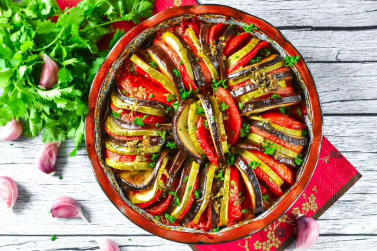

Ратутуй
Очень вкусно, очень сочно, очень ярко - праздник каждый день.
Рататуй классический овощной в духовке представляет собой запеченные в томатном соусе овощи.
Готовить его необычайно просто, любой новичок справится с первого раза.
На выходе вы получите красивое блюдо, которое можно подавать на праздничный стол!

Примерное время готовки Ратутуя 2 часа. В это время входит проготовление блюда и соуса.
Ингридиенты для Ратутуя
- Помидоры (300 г.)
- Кабачки (300 г.)
- Баклажаны (200 г.)
- Чеснок (2 зубч.)
- Растительное масло (5 стол л.)
- Смесь трав (1/2 стол. л.)
- Перец черный молотый (по вкусу)
- Соль (по вкусу)
Ингридиенты для соуса
- Помидоры (300 г.)
- Болгарский перец (300 г.)
- Лук (1 шт.)
- Растительное масло (2 стол л.)
- Перец черный молотый (по вкусу)
- Соль (по вкусу)
Пошаговый рецепт Ратутуя
- На помидорах сделайте надрезы крест-накрест, затем положите их в кипяток на 2-3 минуты.
- Снимите с помидоров шкурку и нарежьте их мякоть небольшими кубиками.
- Болгарский перец, не срезая с него плодоножку, запеките в разогретой до 220°С духовке около 15-25 минут до черных подпалин на шкурке. Я запекала в специальном рукаве. Время и температуру определяйте по своей духовке.
- Перец охладите, не вынимая из пакета, и очистите от шкурки. Удалите у перца семена и плодоножку.
- Нарежьте мякоть печеного болгарского перца мелкими кусочками.
- Очищенный репчатый лук мелко нарежьте кубиками.
- В сковороде разогрейте растительное масло. Выложите лук, обжарьте его в течение примерно 4-5 минут до прозрачности. Помешивайте лопаткой, чтобы не пригорел.
- Добавьте в сковороду нарезанные помидоры и тушите все на небольшом огне около 8-10 минут.
- Добавьте к луку и помидорам измельченный болгарский перец, посолите, поперчите, перемешайте и тушите еще 3-5 минут.
- Кабачки нарежьте кружочками толщиной примерно 2 мм. Помимо обычных кабачков можете использовать цуккини или желтые кабачки. Если у ваших кабачков шкурка жесткая, счистите ее. Но желательно использовать кабачки с нежной шкуркой, чтобы не счищать ее.
- Помидоры также нарежьте кружочками.
- Баклажаны нарежьте кружочками такой же толщины, как и кабачки с помидорами, посолите и оставьте на 10 минут, чтобы вышла горечь. Затем промойте баклажаны холодной водой.
- Очищенный чеснок мелко порубите ножом или пропустите через пресс.
- В миске смешайте растительное масло, измельченный чеснок, смесь французских трав, черный молотый перец и соль.
- В форму для запекания вылейте весь соус. Форму для запекания лучше берите поглубже, чтобы в нее поместились полностью все кружочки овощей. У меня форма была не очень глубокая, а помидоры и баклажаны оказались большого диаметра, поэтому пришлось разрезать их пополам.
- Сверху выложите, чередуя, кружочки помидоров, кабачков и баклажанов. Овощи до половины должны быть погружены в соус. Сверху овощи полейте маслом с чесноком и травами.
- Накройте форму фольгой и поставьте в разогретую до 200°С духовку примерно на 1 час. Точное время и температуру запекания определяйте по своей духовке.
- Затем фольгу снимите и запекайте овощи еще 20-30 минут. Приятного аппетита!